(Mewar and Marwar)
12/11/19 to 26/11/19
Indian history is the oldest. If we open a history book, it starts with Chandragupta Maurya, and the last king in this dynasty was Ashoka the Great. The year of this dynasty was around 230 BC.
Rajasthan State is historically important. Against the first invader, Ghori Mohammed, in 1190 AD, Prithviraj fought and captured him. Magnanimously, Prithviraj rewarded him and sent him back to Afghanistan. If he would have not shown this unnecessary kindness, perhaps invaders might have not established their rule in India and Hindus would have not suffered one thousand years by various rulers, mostly from Afghanistan.
Started with Ghazni Mohammed in 998 AD (he never wanted to establish his rule in India; he came here 17 times and looted all valuables, mostly from temples, and destroyed most of the temples). Then Ghori Mohammed, who invaded a second time, killed Prithviraj and laid the foundation for the Mughals. The list of invaders continued—Balban Dynasty, Khalji dynasty, Tughlaq dynasty, then Timur, Lodi dynasty, then Babur to Aurangzeb. The last king from the family of Aurangzeb was sent to Burma by the British and they started to rule India. Another 100 years, Indians faced their torture.
If the Rajputs were united and stopped the invaders, Hindus of India might have not suffered to that extent and thousands of Rajput ladies would have not jumped into the sacred fire and killed themselves. In this tour, many forts which were attacked by Mughals were shown. Also, the places where thousands of Rajput ladies jumped into sacred fire (jauhar) are shown.
Rajasthan is broadly classified into two regions namely Mewar and Marwar. Mewar is the greenery part of Rajasthan. Mount Abu, Udaipur, Ajmer, Pushkar, and Jaipur come under this region. Marwar is the desert region. Bikaner, Jaisalmer, and Jodhpur are all under this region.
Our tour started from Ahmedabad. From there, Kesari arranged a bus and we went to Mount Abu, Udaipur, Ajmer, Pushkar, Ranthambore, Jaipur, Bikaner, Jaisalmer, and Jodhpur. The tour ended at Jodhpur. Total we travelled around 2000 km. Highways of Rajasthan are too good, so the journey was not tiresome.
Rajasthan differs in some aspects from other states. Here most of the buildings viz. Resorts, Hotels, Movie Theaters, and shopping centers are architecturally beautified. They look like Mansions of Maharajas! Lots of Marble mines are there and connected manufacturing units one can see throughout. Food is fabulous. Most of the hotels serve a variety of food.
11/11/2019 - 12/11/2019Kesari told us to wait at gate No. 5 of the International Airport by 2:30 AM of 12/11. (Since the domestic airport was under repair, most of the domestic flights were operated from International). We left home around 8:00 PM of 11/11 and took a bus to Mumbai. Got down at Andheri and took an auto to the international airport. We reached the international airport by 12:30 AM of 12/11.
Kesari booked tickets in Air India from Mumbai to Ahmedabad. Scheduled time was 5:10 AM. But the flight was late by an hour. After the usual formalities, we boarded the flight around 6:00 AM. Mumbai to Ahmedabad is about an hour and 15 minutes travel. Around 7:30 AM, we reached Sardar Vallabhbhai Patel International airport, Ahmedabad. We collected our bags and came out of the airport.
Kesari representative Mr. Tabrez was waiting at the exit gate of the airport. Our tour bus was also parked. We boarded the bus. Mr. Tabrez served packed breakfast and a bottle of water. From the airport, we proceeded to Mount Abu, the only hill station of Rajasthan. It is about 270 km. Last 25 km is ghat road.
On the way, he stopped once to have coffee. Around 2:00 PM we reached HG Grandiose hotel. Mount Abu is a plateau over a small mountain. Length wise it is 9 km and breadth wise 4 km. Altitude is around 5000 ft. Then we had our lunch. Though a large variety of dishes were not there, food was good. After lunch we checked into our allotted room. Room was good with all required facilities. Wi-Fi was also provided. After freshening we took rest till 5:30 PM. Then we had coffee.
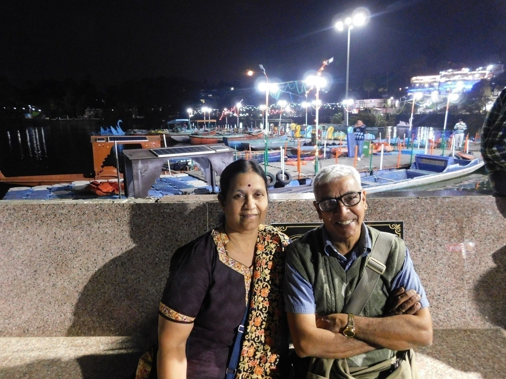
After that, from the hotel we walked to see Nakki Lake. It is a big lake. Boating facility is also there. Close to the lake a small garden is there. Garden is full of colorful lights. Close to the lake lots of small shops of garments, eatables, etc. are there. Here masala milk is famous. We found lots of such shops. Hot condensed milk with kesar and malai and sugar in a mug made out of clay is served! We spent an hour there and returned back to hotel. Had dinner at 8:30. Dinner was simple but good. Night was pretty cool. Ambient temperature may be around 15°C.
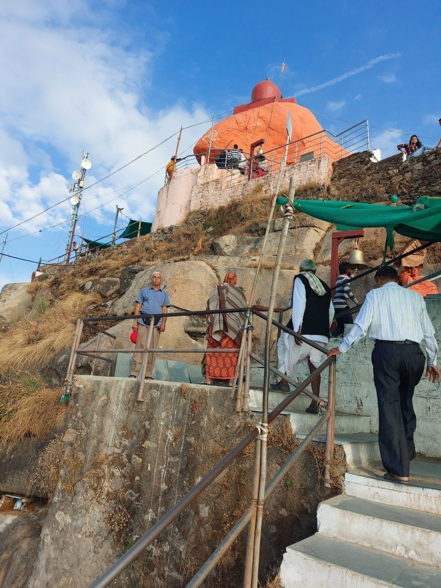
After the breakfast we left hotel and proceeded to Guru Shikhar Dattatreya Mandir. This temple is over a hill. Lord Shiva is the main deity of this temple. This temple is on the middle of the rock and on the top of the hill, Charan Paduka of the saint Guru Shikhar Dattatreya is kept. This place is about 5700 feet above the sea level. From top of the hill we can see Pakistan border. Close to this temple we can see ISRO observatory and BARC laboratory. On our way back we saw 'Peace Garden' belongs to Brahma Kumari’s mission. World renowned spiritual leader Brahma Kumari’s movement head quarter is Mount Abu.
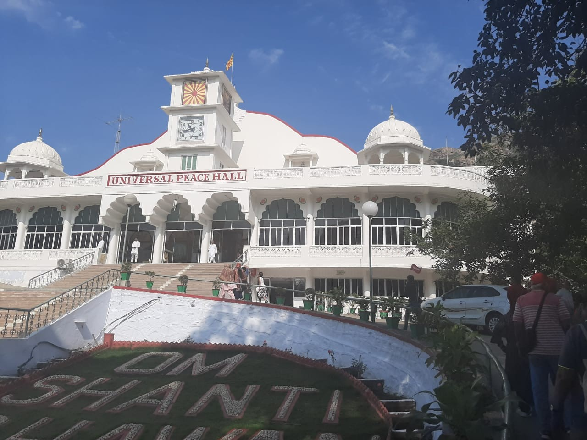
After the temple’s visit we went to Brahma Kumari's Universal Peace Hall. Here two big halls are there. Specialty is no pillars are in the hall, from any corner one can see the stage clearly. Also one of the volunteers gave brief lecture about this ashram. After the visit of universal peace hall, we went to hotel and took our lunch and with our baggage we proceeded to Udaipur. On the way we visited Dilwara temple.
This is the oldest famous Jain temple belongs to 14th Century. From outside these temples got Mughal architectural look. But inside all these temples have beautiful marble sculptures and carvings. Inside this complex there are five temples. First one and the third one are full of beautiful marble carvings. Ceiling is decorated with carvings. Second one is smaller one. Fourth is with golden Buddha. Fifth one is with more number of decorated pillars. From morning to noon, visitors are not allowed in this temple. Only Jain people are allowed to do their regular prayers. After 12:00 PM general public can visit this temple. Mobiles and cameras are strictly not allowed inside this temple. So we could not take any photograph.
After seeing the Dilwara temple we proceeded to Udaipur. It is about 180 km from Mount Abu. During our entire bus travel every 3 hours we had a halt for coffee or tea and to avail wash room facilities. Around 6:00 PM we reached Resort Amatra Shilipi, Udaipur. Rooms are excellent. Very posh and rooms are more spacious with rich amenities. Udaipur climate was pretty cool. I went around the resort. I saw swimming pools, gardens, common places with beautiful statues and fountains, colorful light decorations. Dinner was good. Variety of dishes were kept. We enjoyed the dinner.
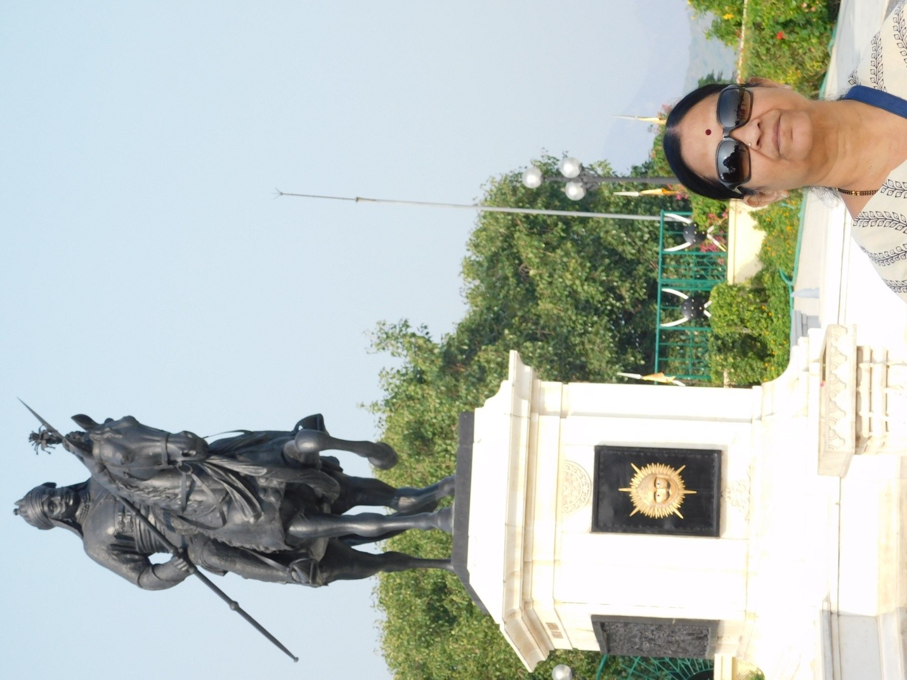
We got up at 6:00 AM and got ready by 7:30 AM for breakfast. After our breakfast, we proceeded to see the important tourist spots. Maharana Pratap Memorial is a historic site that is dedicated to the great Maharana Pratap Singh and his loyal horse Chetak. The memorial was constructed in 1948.
Maharana Pratap was a great warrior. When Akbar was ruling Delhi, most of the Rajputs kings were in favor of Akbar and the only Rajput king Rana Pratap who was ruling Mewar stood alone against Akbar, and a war took place against Akbar on June 18, 1576 at Haldighati. In that war even his brothers were with Akbar. In this war Akbar didn't participate. Only Man Singh, another Rajput king, heading Akbar's army. Maharana Pratap with his small army of 20,000 soldiers had to fight against Akbar's 2,00,000. In this war Maharana Pratap heavily lost and wounded. But his famous horse Chetak with his serious wounds saved him and ultimately Chetak died. In this war, Mughals captured many places of Mewar, but they were unable to oust Maharana Pratap who continued to harass the Mughals through guerrilla tactics. In this memorial we can see the beautiful statue of Maharana Pratap on this famous horse Chetak.
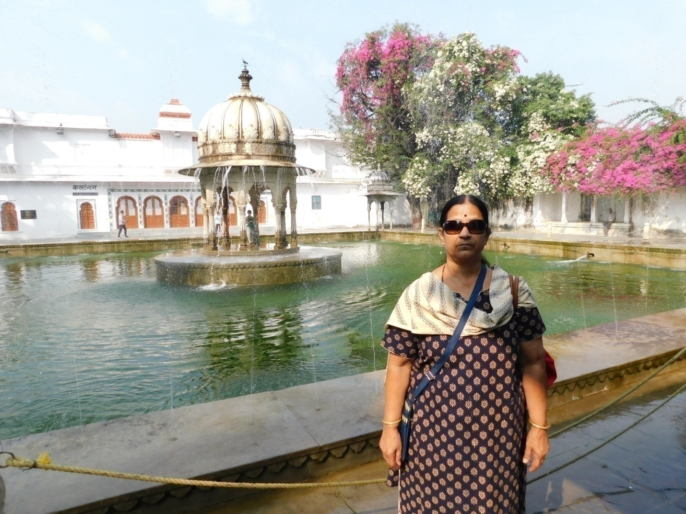
It is big garden. Lot of fountains and marble statues are there. The beauty of the garden is that all the fountains work on gravitational flow of water. Local guide says that no electrical or electronic gadgets are used in these fountains. When we clap our hands or whistle loudly, the fountains become more intense!
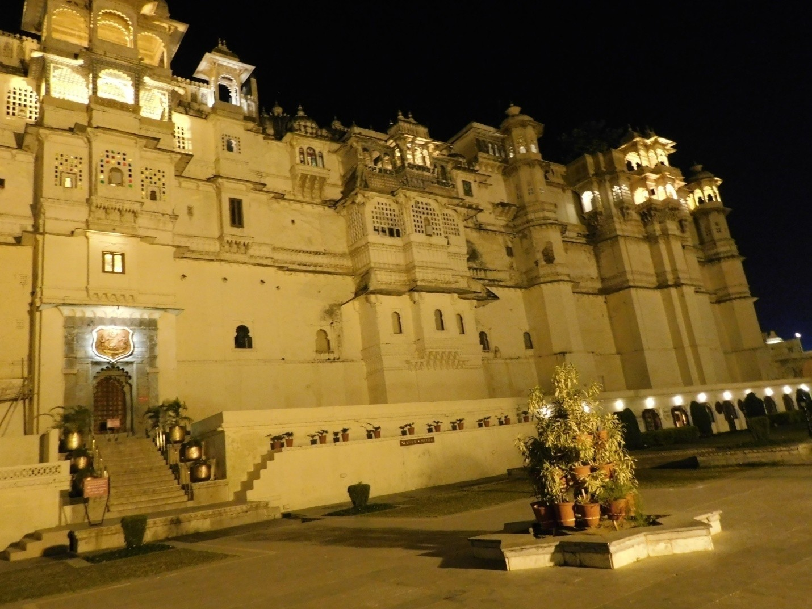
On the east bank of Lake Pichola, the City Palace in Udaipur was built around 400 years back by Maharana Udai Singh and his successors in 1559. The Maharanas used to live in the palace and administer their kingdom. Inside this palace unique paintings, antique furniture, variety of ornaments, various items made out of crystals and porcelains are kept. Also a museum is there inside. A beautiful Sheesh Mahal is also there. It is a four story palace and we have to climb some 300 or more steps. There was light and sound show for an hour from 7:00 PM. The show narrated the history of Rajasthan starting from Alauddin Khalji to independence India. The show ended by 8:00 PM. After that we returned back to hotel.
After our breakfast we went to Eklingji temple, Kailashpuri Udaipur. It is about an hour drive from hotel. This is the personal temple of Maharana of Mewar. This temple complex was built by various kings of Mewar. Main deity is Shiva with four faces in black colour. Inside this temple complex various deities are also there. Most of the sculptures are partially damaged. This destruction was done by Alauddin Khalji. Arvind Singh at present from that dynasty comes here every Monday and does pooja. Since camera and phones are not allowed in this temple, photos could not be taken.
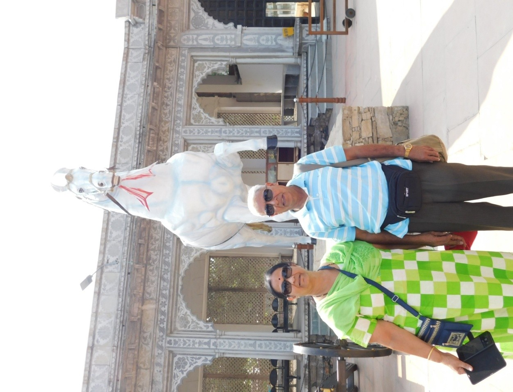
Haldighati is a hilly place where Maharana Pratap fought against Akbar. This place is about 2 hour drive from the main city. The mud of this mount being yellow, this place is called Haldighati. This museum depicts the war between Akbar and Maharana Pratap. In this great war against Akbar's massive force Maharana Pratap was saved by his horse Chetak. Place of war Rakta Talai, Haldighati. In this village, villagers are selling Sitaphal (custard apple) at a throw away price. A full bag may be around 20 big fruits are sold for Rs 100/-. Nearby to this museum a memorial is there for the horse Chetak.
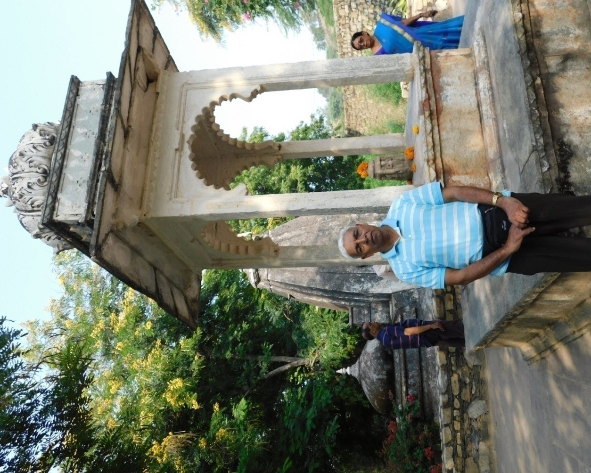
From Haldighati, Nathdwara is about 2 hours travel. We reached this place around 4:00 PM. From the parking place we took auto and went to the temple. This Krishna temple is one among the five famous Krishna temples of India (Pancha Dwarka). Big crowd was there. There is no proper queue. Kesari arranged a pandit to take us inside the temple. Somehow we managed to see the main deity of Krishna. The main deity is in black colour with Radha. After the darshan we returned back to hotel. Also we saw the biggest Shiva statue which is now under construction. This may be the largest statue in India.
We left Udaipur early since we have to travel a long distance, some 300 km. That day plan was to see the fort of Chittorgarh—Rana Kumbha Palace, Meera Mandir, Vijay Stambha and Padmini's palace and Dargah of Ajmer. Then night stay was planned at Pushkar. So we left after our breakfast around 8:00 AM. Chittorgarh is 115 km away from Udaipur. We reached Chittorgarh around 10:00 AM. From the parking place we went to the fort by six seater auto.
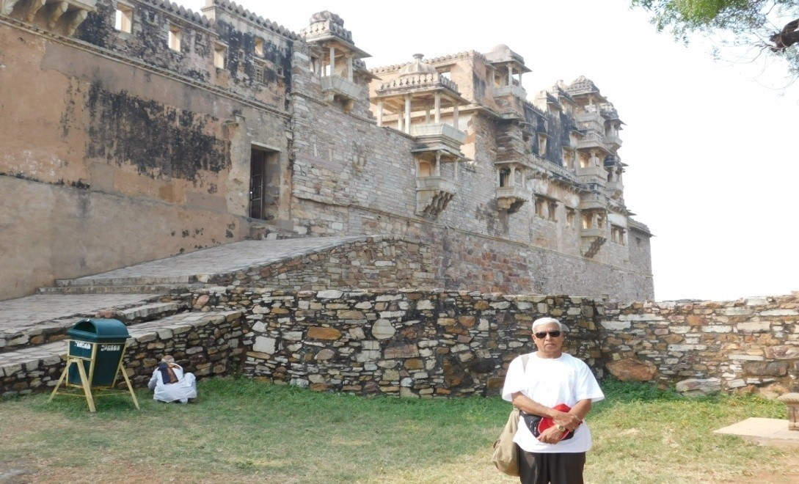
In 1290, Khalji dynasty captured Delhi. They were from Afghanistan. Subsequently Jalal-ud-din Khalji became the king. He nominated his son-in-law & brother-in-law Alauddin Khalji as the Governor of Kara (present Allahabad). Because of his greediness he assassinated his uncle Jalal-ud-din Khalji and became the king of Delhi. Then he invaded Gujarat and captured it. After hearing the beauty of Padmavati, wife of Ratan Singh of Chittor, he declared war against him and Ratan Singh was killed. Before Alauddin Khalji entered the fort of Chittorgarh, Padmavati and thousands of Rajput ladies jumped into the sacred fire and killed themselves.
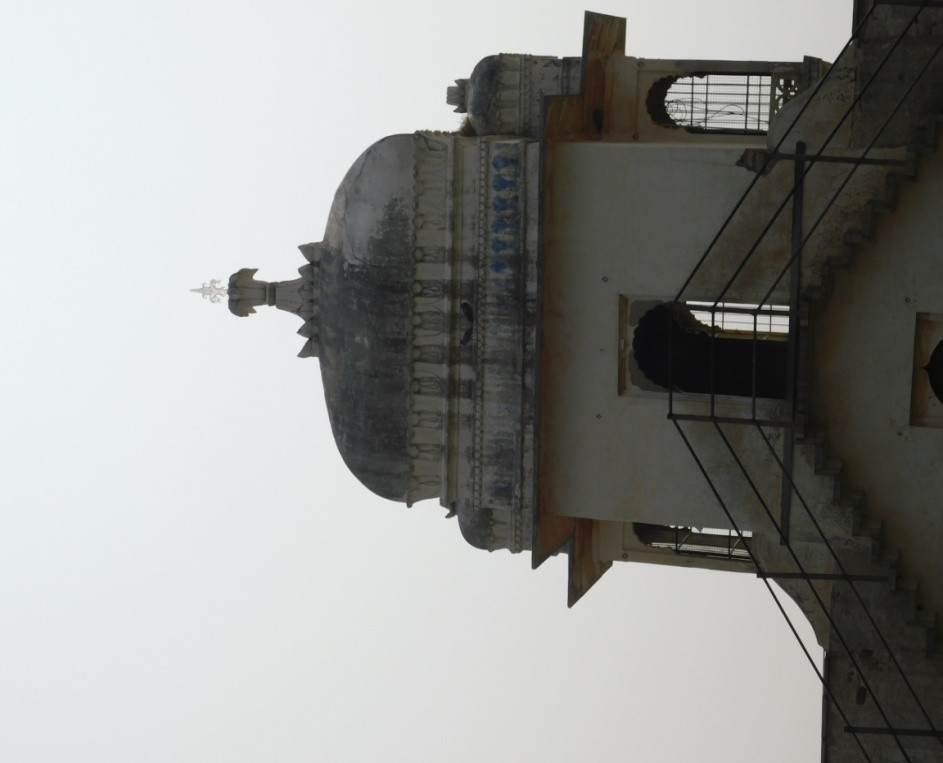
Chittorgarh Fort is the largest fort of India located on a hill near Gambheri river. This fort was built by various Maurya rulers in 7th century. This fort was attacked three times: First—In 1303 by Alauddin Khalji; Second—In 1535 by Sultan Bahadur Shah; Third—In 1567 by Akbar. All the three times in this fort thousands of Rajput ladies killed themselves by jumping into sacred fire (jauhar) to avoid submitting them to Mughals. Within the fort the four important places are Rana Kumbha Palace, Meera Mandir, Vijay Stambha and Padmini's palace. Being the fort is very big, by the hired six seater auto we visited all the places.
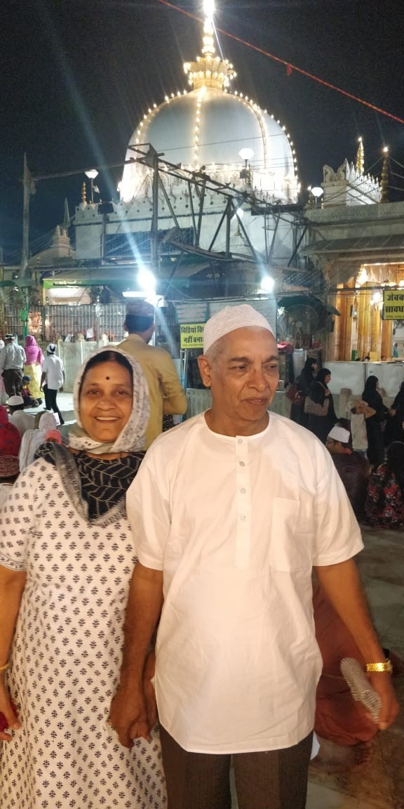
Then we proceeded to Ajmer. On the way we took our lunch. We reached Ajmer around 6:00 PM. Dargah of Ajmer is considered the most popular one in Asia. People from different corner of the world are visiting this Dargah. Our bus was parked a few km away. We went by auto to the point called Delhi Gate. After that we walked. Dargah was very much crowded and no proper queue system is followed. Like Shrinathji temple of Nathdwara, here also people were pushing and pulling. Because of the fear of pick pocketers, we left all our valuable things in the bus itself. Here we (ladies and gents) have to cover heads before entering into the Dargah. At the entrance we can get a cover for Rs 10/-.
Difference between Mosque and Dargah: Mosque is like a temple. Generally other community people may not visit. Regular prayers at stipulated time are done here. Dargah is "samadhi" of a spiritual leader of that community. Here people belonging to other community also used to visit. Other important Dargahs are Haji Ali at Mumbai, also one at Nagore. And we returned back to bus and proceeded to Pushkar. Pushkar is close to Ajmer. It is about 20 km. Our rooms were booked in Hotel Pushkar Fort. This is a huge resort with big lawns and gardens. Rooms are spacious and good. We reached this hotel around 8:30 PM and had our dinner.
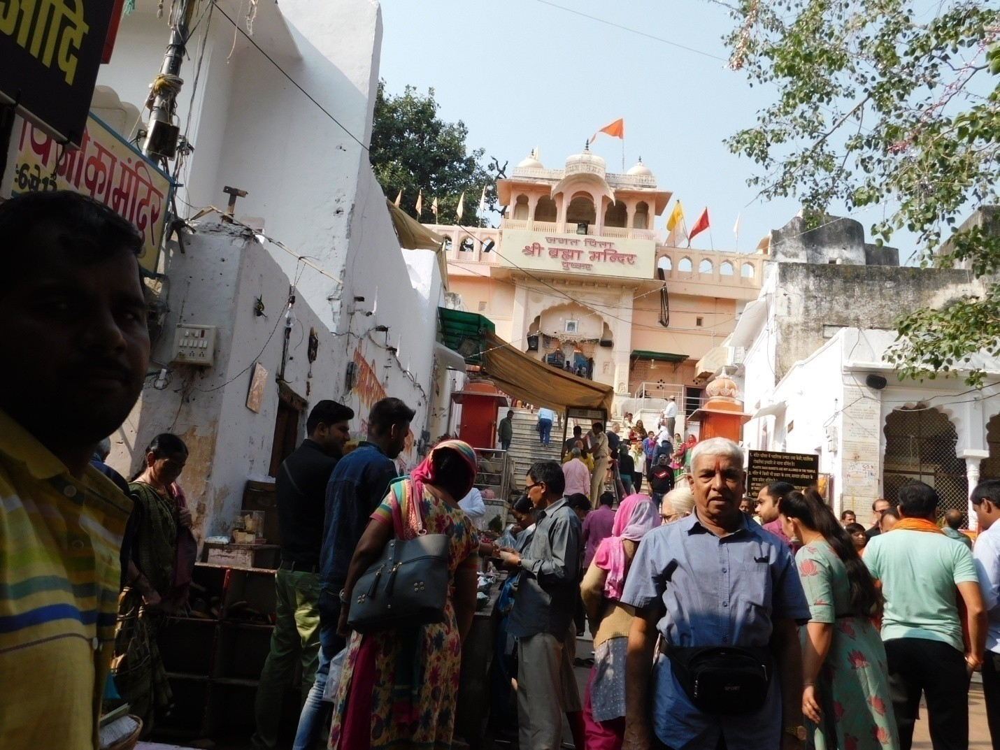
After the breakfast (Resort is so rich, but the breakfast was so-so) we proceeded to Pushkar Lake. Pushkar is the only place where temple is there for Brahma. In this temple, Archana or Aratis are not done. All kind of poojas are done at the Lake Pushkar. Kesari engaged a Pandit for a simple puja for Rs 10, but it ended with Rs 500/- donation. Here people also do special rituals for their ancestors like done at places like Varanasi and Rameshwaram. After this pooja we went to Pushkar temple. Fortunately no rush was there. We had a good darshan of Brahma and then boarded the bus and proceeded to Ranthambore. It is around 300 km away from this place. After a break for lunch and coffee, around 6:00 PM we reached Ankur Resort, Sawai Madhopur. We were garlanded while checking in!
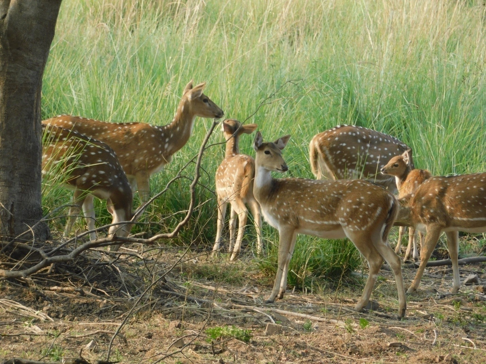
We got up early around 5:00 AM. Had a clean shave (Tigers won't like unshaven clumsy look). And carefully chosen the clothes (Guide suggested not to wear bright coloured dresses) and left to see National Park of Ranthambore, Tigers Resort. In this park about 100 Bengal tigers are there. Kesari arranged through forest department a special vehicle and a guide. The forest is about 10 km away from the resort. Forest is divided into many zones. We went around the forest for about 3 hours, but didn't spot any tiger. Of course we saw deer, peacocks, wild boar etc. Around 10:00 AM we returned back to hotel. Took bath and after lunch we proceeded to Jaipur.
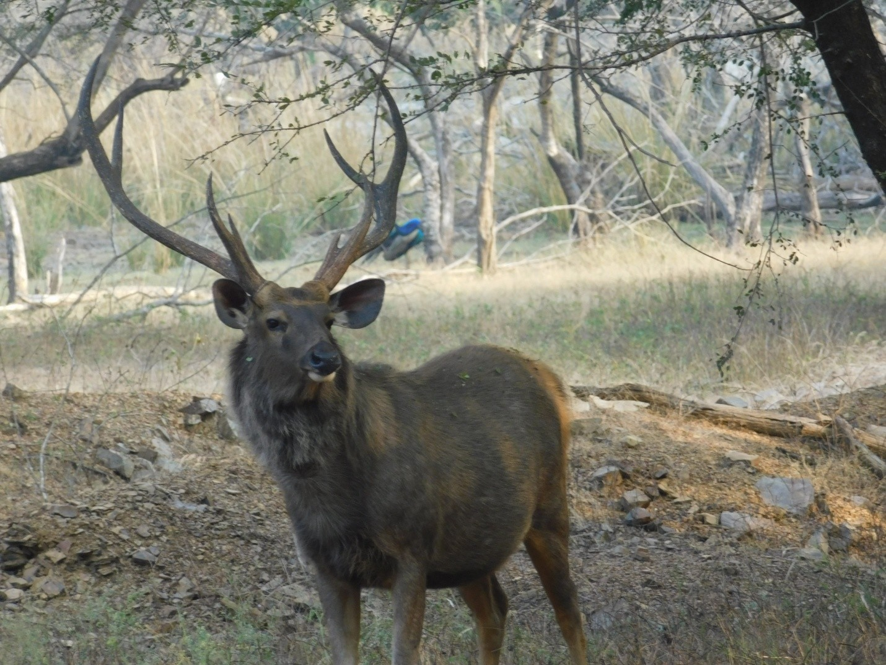
Jaipur is 150 km away from this place. Before entering the main city we visited the famous Chokhi Dhani of Jaipur.
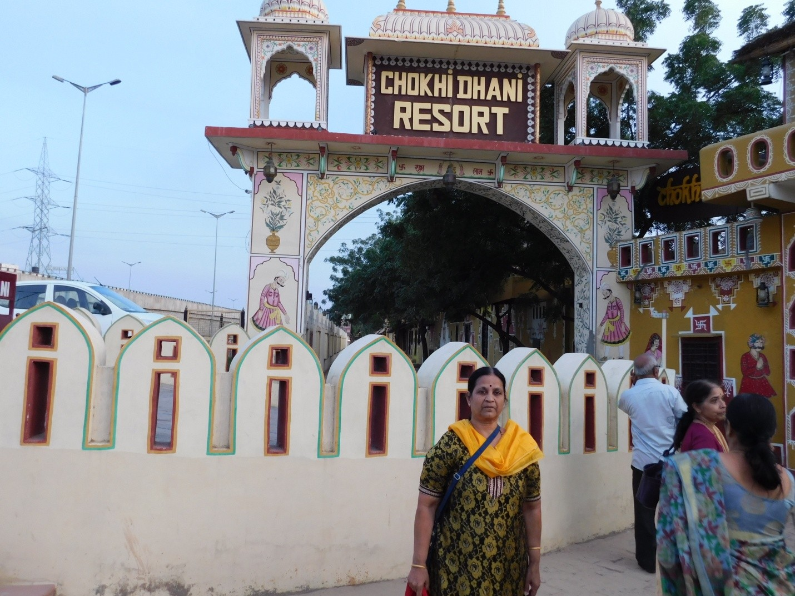
We reached there around 5:30 PM. We spent around 2 hours in seeing various replicas like Vaishno Devi temple, Tirupati Balaji temple, Haldighati and there were few stages where dances, fortune tellers, puppet show etc. were performed. Also various stalls were there for selling cosmetics, dresses etc. Then we had special typical Rajasthani dinner, food is served in the typical style of "Chokhi Dhani". After dinner we left that place and came to our hotel Vesta Jaipur. It is good hotel.
This palace was constructed by Maharaja Sawai Jai Singh. Also he created Hawa Mahal and Jantar Mantar. In this palace we can see two huge vessels made out of sterling silver, used by Maharaja Madho Singh. He used to drink only Ganges water. For that purpose these vessels were made. Other attractive items are clothes of Maharaja Madho Singh. He was a huge man weighing 250 kg! His big clothes were kept here.
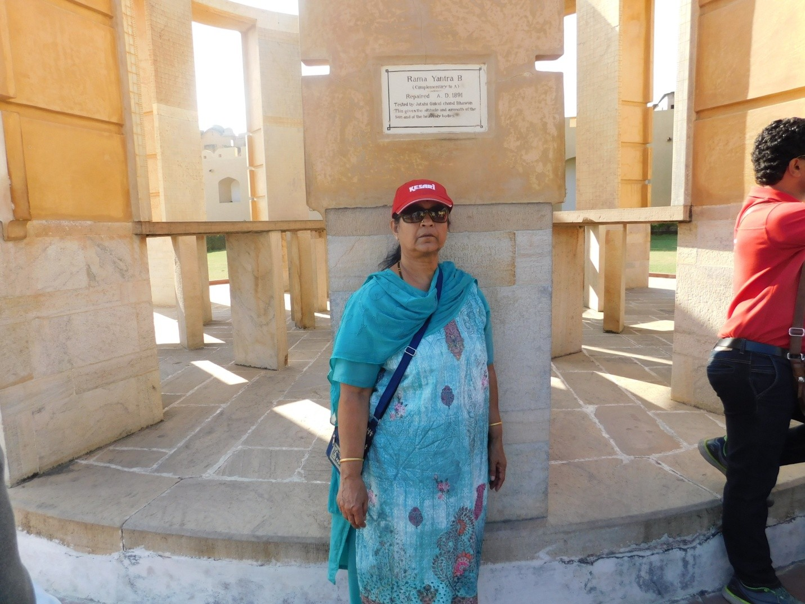
Jantar Mantar was built by Raja Sawai Jai Singh in 1734. It is an astronomical observation site. In this site 20 main fixed construction with graduations engraved on marble slabs to measure precisely are seen. Mostly work on basis of Shadow. A massive clock construction is there and we see the time precisely. The least count of this clock is 2 seconds!
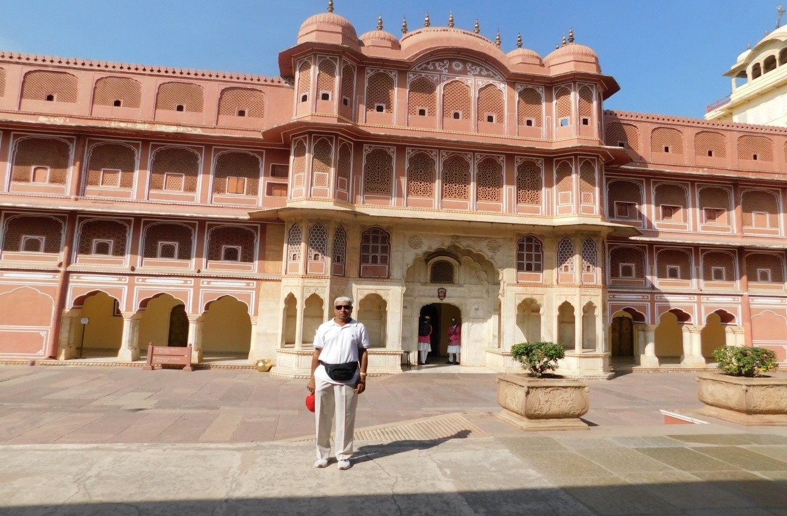
This fort was constructed by Man Singh, a trusted General of Akbar. A beautiful Hall is there in this Fort. This Hall is famous for its mosaic glass works. King used to discuss important issues with his ministers in this hall. Most beautiful Sheesh Mahal is also there in this fort. The walls and ceilings are carved with beautiful paintings. A Kali temple is also there inside this fort. It is surprising to see the arrangements to collect rain water from the roof and preserved in the tanks provided in the ground floor.
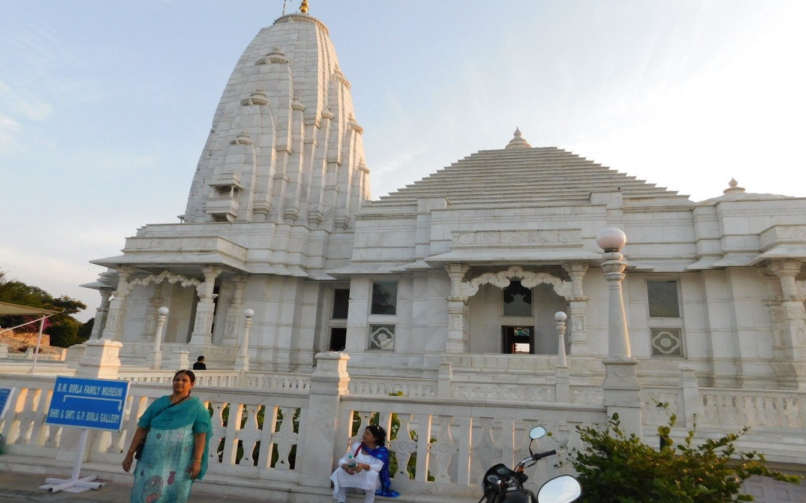
This is the beautiful Mandir constructed by Ganga Prasad Birla and Nirmala Birla. Main deity of the temple is Lakshmi Narayan.
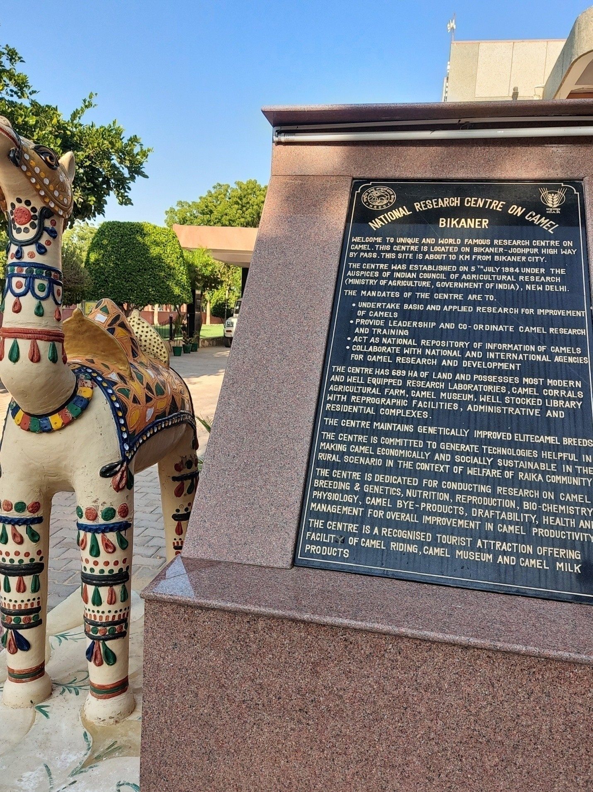
After breakfast we left early around 8:00 AM to Bikaner. It is about 300 km away from Jaipur. On the way we took lunch. Before entering into Bikaner we visited Camel Research Farm (ICAR National Research Centre). This is the Govt. organization. Hundreds of Camels are being taken care of. At the entrance a canteen is there. We had tea, the milk used was from camel! Cost of a grown-up camel is around 4 lakh. In this state many places camel is being sold. A guide was briefing about camel. At a time it drinks around 40 liters of water and days together it won't drink water. Camel finds food by its own. Mostly it takes leaves of desert trees. Male camels are stupid and at times rude! Grown up camel weight is around 500 kg. Two shops are there here. They sell woolen things made out of camel wool. Also camel leather products like hand bags, wallet etc. are being sold. After the visit of camel Farm, we proceeded to Bikaner and reached Hotel Chirag, Bikaner.
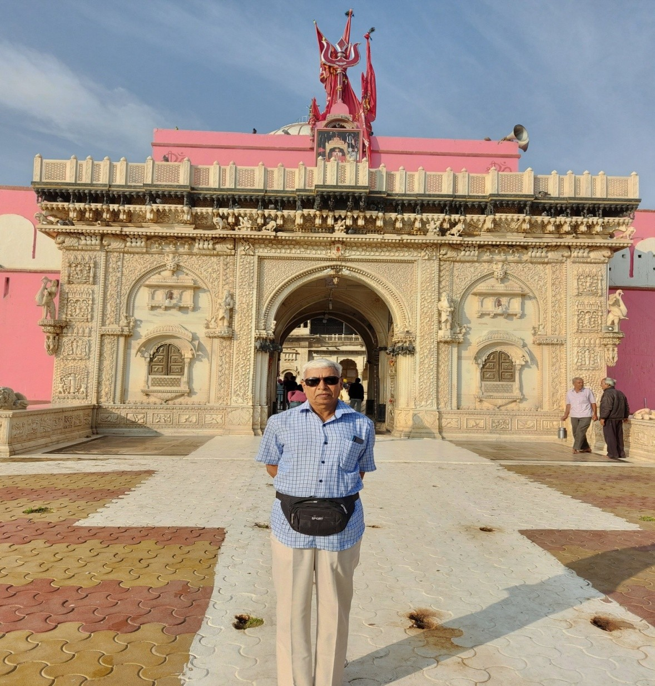
This temple is about 30 km away from Bikaner city. Main deity is Karni Devi. In this temple thousands of mice are there. They roam around inside temple. According to local guide these mice never get out of this temple and rats and mice from outside never get inside. Also snakes which are common in this place never come closer to this temple.
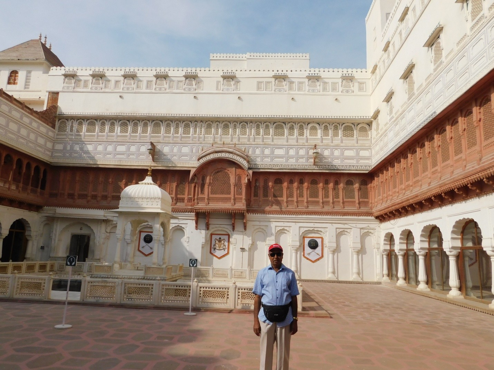
Junagarh Fort is 45 minutes drive from the city. This Fort was initially called Chintamani and then renamed as Junagarh Fort. This Fort was built by Rao Bika in 1478. This Fort was in use by Royals till 1902. Palaces of this Fort or any part of this fort were not damaged by any invader. From the beginning, these kings accepted Akbar’s rule. A small museum is there in the palace. In this museum lots of medals, roles of Rajputs in Second World War, after independence their role in forming democratic government all we can see here.
After breakfast we left for Jaisalmer. It is around 330 km from Bikaner. It is about 8 hours travel. This Highway was good. We found absolutely no traffic. Hardly we saw few army trucks! Pokhran is on this route only, 100 km before Jaisalmer. We took break close to Pokhran and had our lunch. This area is close to Pakistan border. So on this highway we can more movements of army vehicles. Around 2:30 we reached hotel. Hotel name is Desert Palace. Among all the hotels we stayed, perhaps this hotel may be considered the best one. The room was quite big. The hotel looks like a Palace with lots of architectural beauty. We took rest till evening 5 and then went for sightseeing.
Jaisalmer is also called as Golden City. Here stones are in gold colour. Most of the buildings like fort and palaces constructed in olden days, were used only stones without any binding material. They arrange the stones in such a way they get locked in that position forever. Main reason for not using any binding material is water scarcity. In summer the temperature goes to 50°C. Till Indira Gandhiji’s time, people here were struggling to get even drinking water. During Indira Gandhi’s tenure as a Prime Minister, Indira Gandhi Canal was made, which provide abundant water to this city from the neighboring State Himachal Pradesh. Even today this place is getting enough water supply; in certain places cultivation is done. (cultivation in Thar desert!)
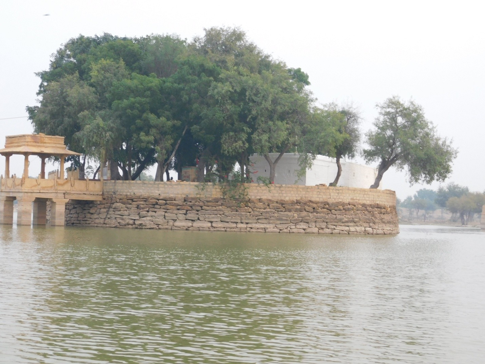
This lake was made by King Gadsingh. Till the time of water supply from the canal, this lake was the only source of water. Now this lake is used as a tourist place and boating arrangement is there. Kesari arranged boating in this lake. After boating we watched a puppet show at Kala Vikas. The puppet show was not a continuous story. Few independent episodes were shown. A museum is also there in this hall. This Theatre hall and the museum is the effort of a single man, who was a teacher in a school. He is eighty-plus and now his relatives are managing this show. After the show we returned back to hotel.
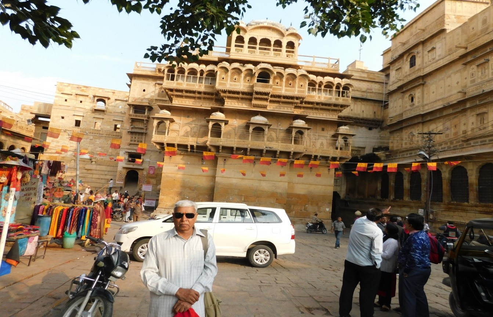
Next day after breakfast we first went to Jaisalmer Fort. This fort locally known as Golden Fort. This is one among the largest forts of Rajasthan. Being scarcity of water, in this fort no plastering material is used. Stones are kept one over the other by locking system so that they never get shifted from its place even if it is hampered. This fort was constructed during 1156 by King Rawal Jaisal. This fort is having palace for the royal people and this fort accommodated common people. King and his people around 3000 were staying here. Now also major portion of the fort is occupied by residents. Inside this Fort 3 Jain temples are there. These temples are looking like Dilwara temple.
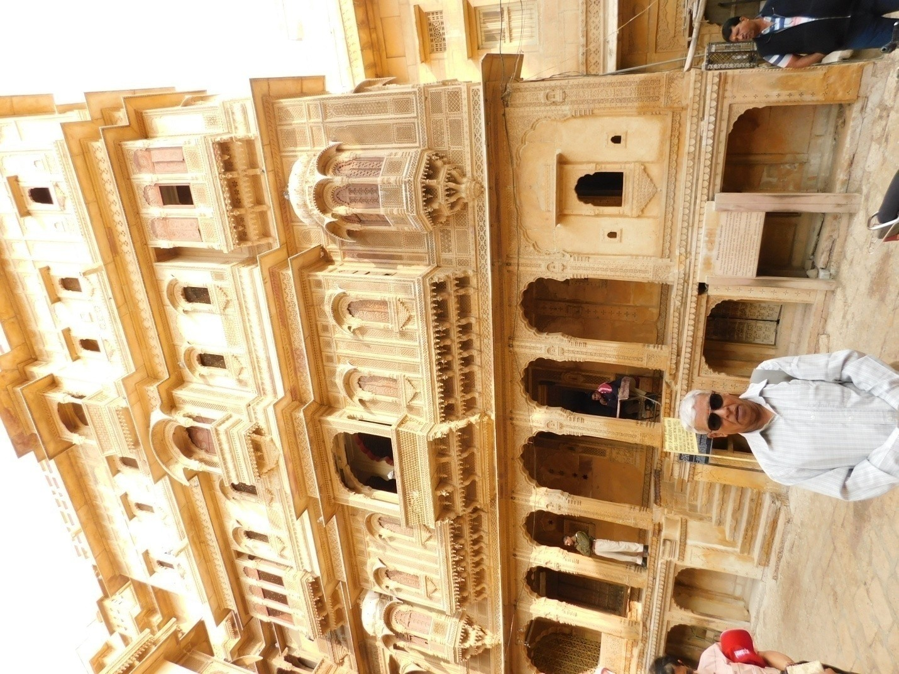
After the palace we visited Patwon ki Haveli. There are five hawelis there. These hawelis are outside the fort. These hawelis were constructed by rich traders in 18th century. These are like Mansions. Very rich look and inside decorated with beautiful marble carvings. Apparently looks these traders are richer than kings of that time. Inside these Mansions Sheesh Mahal, spacious hall, kitchen etc. are there. After Havelis visit, we returned back to Hotel and had our lunch. Around 4:00 we left to see Sam Sand Dunes, Thar desert.
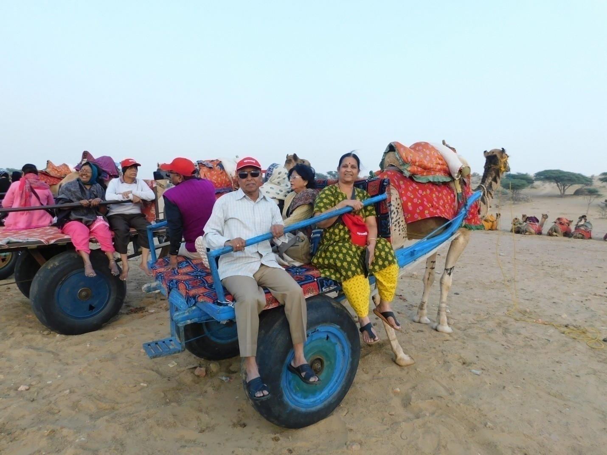
It is 40 km from city. Up to the desert area we went by bus. There are two options to move around the desert. One option is to ride over the camel. Two persons can go over the camel and the caretaker will walk along the camel. Other option is to move on camel cart. 4 or 5 person can sit on this cart and a camel will pull this cart. To manage the cart and camel one person will be there. In our group some opted camel and some opted camel cart. The drive is about 20 minutes. They dropped us in a heap of sand, from there we can see the sunset. We were roaming around in that area for an hour. Being that day was cloudy, we didn't see the sunset clearly.
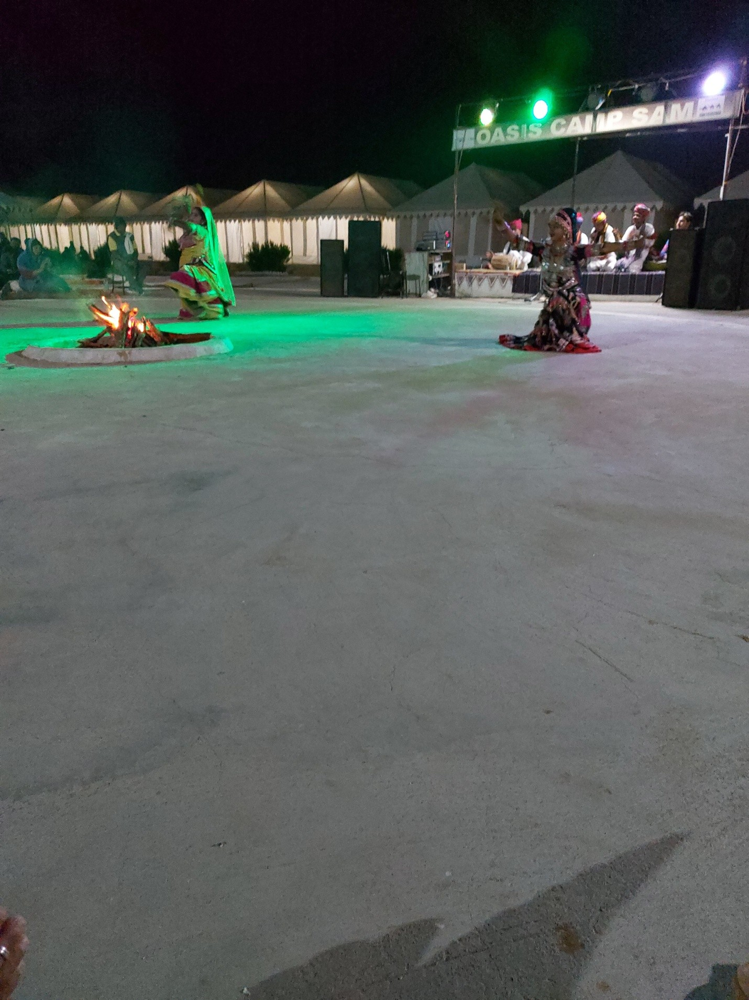
After the camel cart ride, we returned back to the parking place, and Kesari booked ticket for a local dance program. It is an open place and beds were spread with pillows. We sat comfortably and the program was about 45 minutes. The program started with a prayer song on Lord Ganesh and continued with typical Rajasthani dances. After the dance program we had dinner in the same premises and after the dinner we returned back to Hotel.
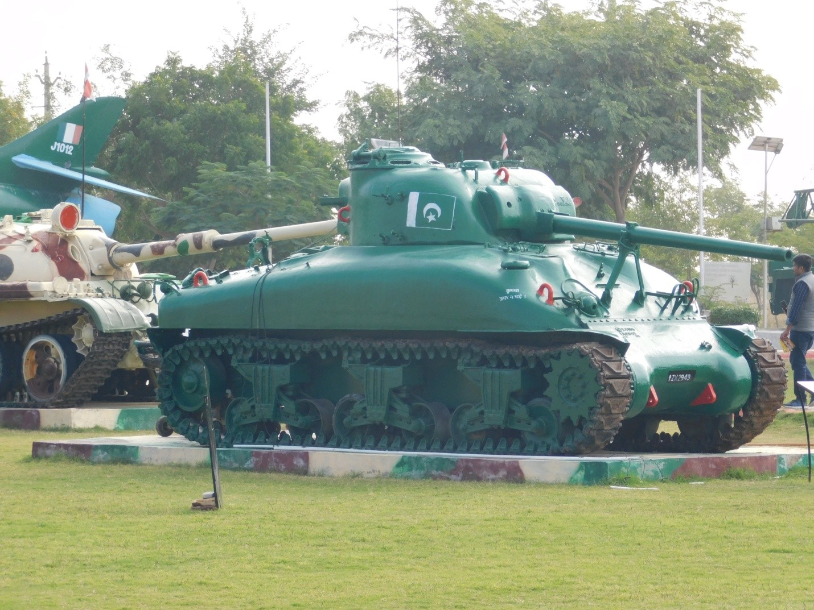
After breakfast 9:30 AM we left for Jodhpur. It is 260 km away from Jaisalmer via Pokran. On the way 5 km away from Jaisalmer city, we stopped at war museum (Museum, Jaisalmer). In this museum war took place between India and Pakistan since 1947 are depicted. Detailed descriptions and war hero photos of 1965 war are kept in this museum. Few American Pattern Tanks, which were used by Pakistan in 1965 war were captured by Indian Army. Those tanks are also kept here. A video show for some 20 minutes is shown about Indo-Pakistan wars. A sale counter is there. Souvenirs, T-shirts, handicrafts, story books are all sold here.
Around 1:00 PM we reached Pokran and had our lunch. From here Jodhpur is about 150 km and we reached Jodhpur around 5:00 PM. Our rooms are booked in Rudransh Inn. Evening we went for shopping—Rajasthan Handicrafts. Clothes, bedspreads, famous rajais and handicrafts are sold here.
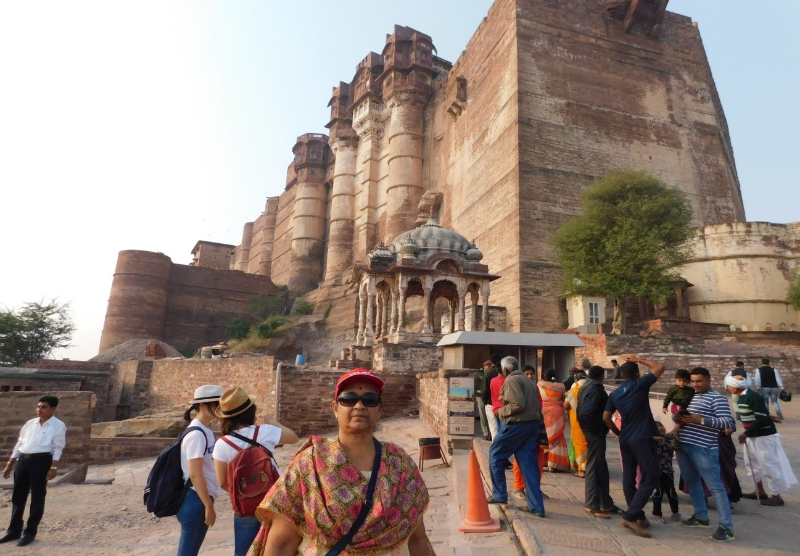
After our breakfast, our first visiting place was Mehrangarh Fort. Mehrangarh fort was built by Rao Jodha in the year 1459. It is a big fort. There are 15 floors in the palace of this fort. In this Fort lift is there. We can reach 12th floor directly and the top 3 stories we can walk and see. This Fort is 400 years old. In this fort different sections are there. Sheesh Mahal, Palki Museum, Armor museum, paintings etc. we can see. Present king of this Dynasty is Maharaja Gaj Singh Ji is the son of Maharaja Hanwant Singh of Jodhpur by his first wife, Maharani Krishna Kumari of Dhrangadhra. He succeeded to the titles and dignities of his father when only four years of age, in 1952, when his father died suddenly in a plane crash.
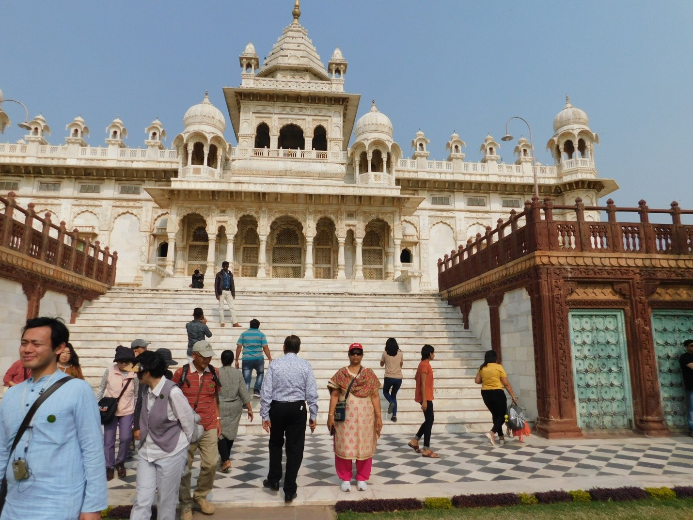
It was built by Maharaja Sardar Singh of Jodhpur State in 1899 in memory of his father, Maharaja Jaswant Singh II, and serves as the cremation ground for the royal family of Marwar.
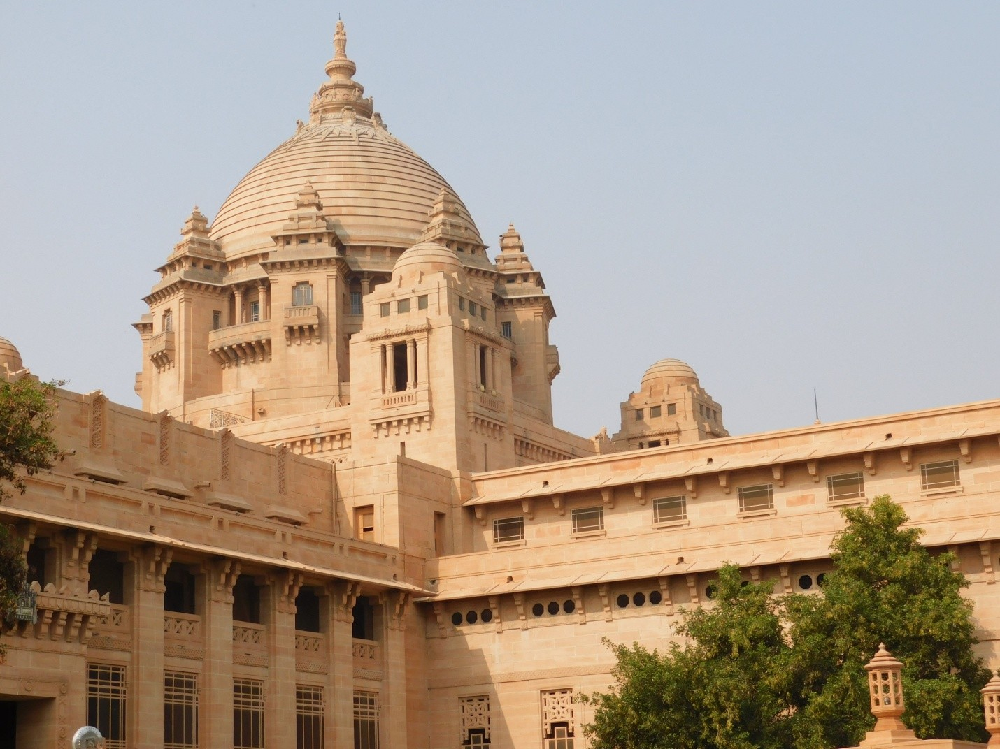
The construction of this palace has been started in 1929 and completed in 1943 by the king Umaid Singh. This is considered as one of the biggest residential palaces in the world having 347 rooms. The Palace is divided into three parts: the residence of Royal family, a luxury hotel managed by Taj groups named Taj Umaid Bhawan Palace and a museum. The classic cars of the Maharajas are also on display in the garden in front of the museum. After the palace visit, we returned back to hotel. Evening we went for local shopping.
After breakfast we left for Jodhpur airport. Kesari booked our return trip to Mumbai in Air India. The flight was about 2 hours late. At last we boarded the flight around 3:00 PM and reached Mumbai International Airport around 6:00 PM. We collected our bags and got a cab by 7:00 PM. We reached home around 10:00 PM.
Rajasthan was a journey through the living soul of Indian history. From the lush greenery of Mewar and the architectural wonders of Udaipur to the golden stones of the Marwar desert, every mile offered a glimpse into a legacy thousands of years in the making. Traveling through these 2,000 km, I found a state that treats its heritage with royal dignity—where even modern resorts and theaters look like the Mansions of Maharajas. Whether it was seeing the incredible precision of the clocks at Jantar Mantar, tasting camel milk in Bikaner, or reflecting on the brave history of the Rajputs at Chittorgarh, the warmth of the journey made a deep impression. For a traveller, Rajasthan is not just a destination; it is a walk through the courage and enduring beauty of our oldest traditions.